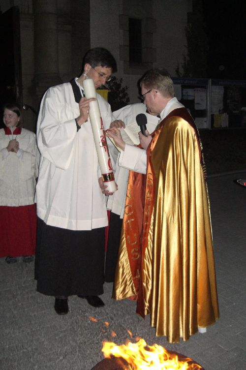
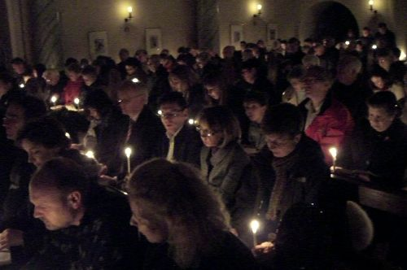
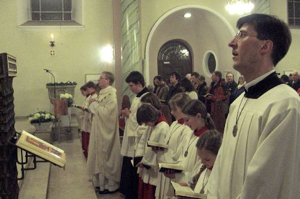
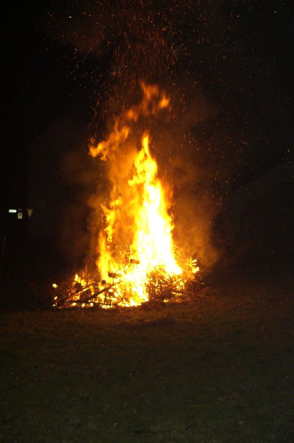

Feierlicher Auferstehungsgottesdienst berührt die Gemeinde
Es ist 21.00 Uhr am Karsamstagabend. Viele Gemeindemitglieder sind in ihrer Kirche St. Josef versammelt, um die Auferstehungsmesse zu feiern und in das Geheimnis des Osterfestes einzutauchen.
Bevor Pastor Schmelz mit seinen Messdienerinnen und Messdienern in die Kirche einzieht, findet vor dem Hauptportal auf dem Kirchplatz die Lichtfeier statt, während der das aus Stein geschlagene Feuer gesegnet und die Osterkerze bereitet wird.
|
 |
| |
Pastor Schmelz steckt die Nägel in die Kerze |
Mit der entzündeten Kerze und den in die Kerze hineingesteckten symbolischen Nägeln ziehen die Gläubigen – Pastor Schmelz und der Osterkerze folgend in die Kirche ein.
Der dreimalige Ausruf „lumen Christi“, den die Gemeinde mit einem freudigen „Deo gratias“ beantwortet, bildet den Auftakt, das neue Osterlicht an die in den Bankreihen wartenden Gläubigen auszuteilen und so den Kirchenraum in ein feierliches Kerzenlicht zu tauchen.
| |
 |
| |
Die am Osterlicht entzündeten Kerzen erhellen die Kirche |
An das mit großer Freude von Herrn Pastor Schmelz vorgetragene Exsultet schließt sich der Wortgottesdienst mit seinen vier vorgetragenen Lesungen und dem „Gloria“ an.
Ab jetzt erstrahlt die Kirche wieder in hellem Lichtschein und das Glockengeläut vom Kirchturm trägt die Freude über die Auferstehungsbotschaft Chrisit hinaus in die Welt.
|
 |
| |
Pastor Schmelz zusammen mit Messdienerinnen und Messdienern beim feierlichen Gesang |
Die „Frohe Botschaft“ von der Auferstehung Christi weiß Pastor Schmelz in einer mit Überzeugungskraft und innerem Engagement vorgetragenen Predigt den anwesenden Gemeindemitgliedern zu vermitteln.
So ist es nicht erstaunlich, dass die Gläubigen in der voll besetzten Kirche während der zweistündigen Feier, die der Kirchenchor mit seinen Gesängen und Herr Frielingsdorf an der Orgel mit seinen treffenden Interpretationen mitgestalten, diese Zeit nicht als lang empfinden.
In dieses Hochamt eingebettet sind auch die Weihe des Taufwassers und die Segnung der Lebensmittel, die Gemeindemitglieder – alter Tradition folgend – im Altarraum niedergelegt haben.
Zum Schluss der Hl. Messe entzünden zwei Pfadfinder an der Osterkerze das Licht ihrer Sturmlaterne, das sie auf den Kirchplatz hinaus tragen, um mit diesem Licht das große Osterfeuer der Pfadfinder zu entzünden.
|
 |
| |
Osterfeuer der Pfadfinder auf der Kirchwiese |
Erstmalig in diesem Jahr kann das Feuer der Osterkerze als großes Osterfeuer neben der Kirche entfacht werden, so dass die Gläubigen nach der Hl. Messe die Möglichkeit haben, hier zu verweilen und die Osterfreude zusammen mit anderen zu teilen.
Dabei haben die Pfadfinder auch für das leibliche Wohl gesorgt und sogar ein großes Zelt aufgebaut, um ggf. Schutz vor dem ausgebliebenen Regen bieten zu können.
Alle Bilder finden sie im Fotoalbum.
Be 04.04.2010

{kind=link}
{kind=link}
{kind=link}
{kind=link}
{kind=link}
{kind=link}
{kind=link}